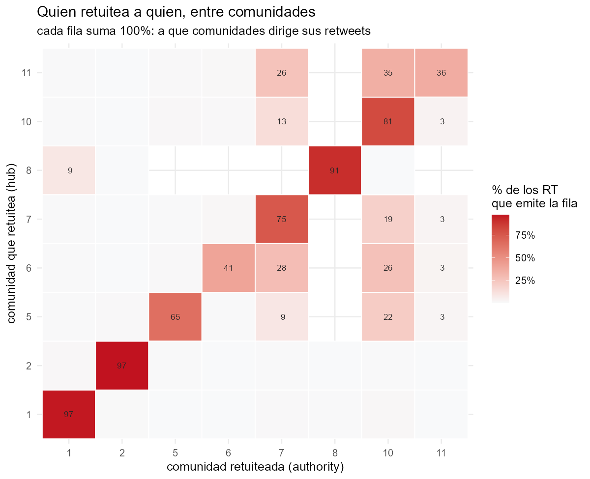
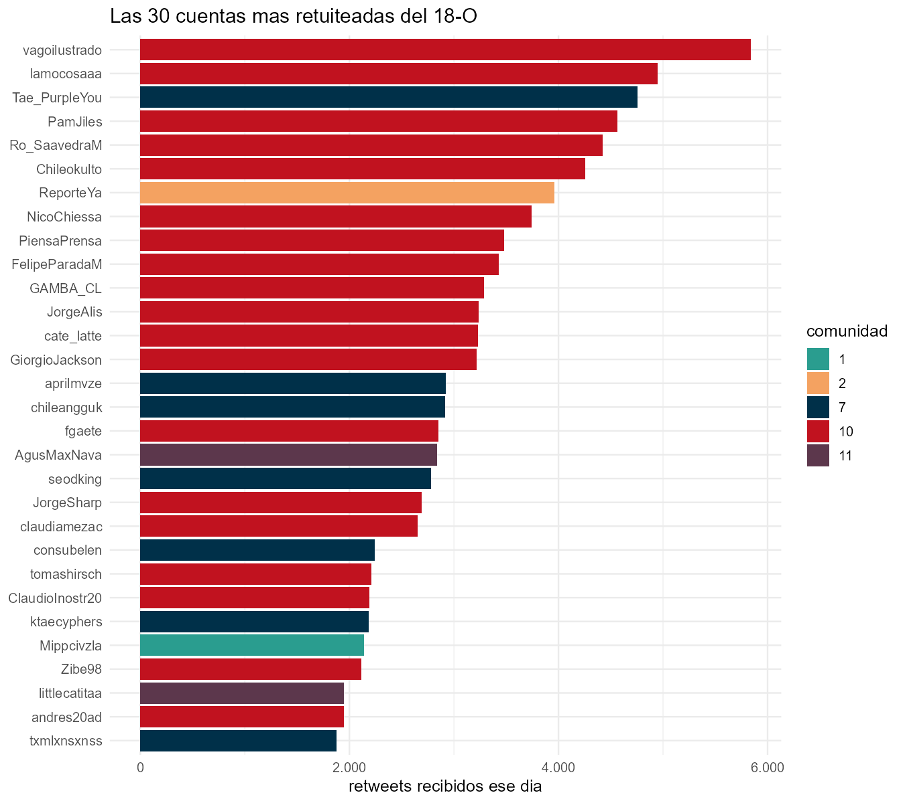
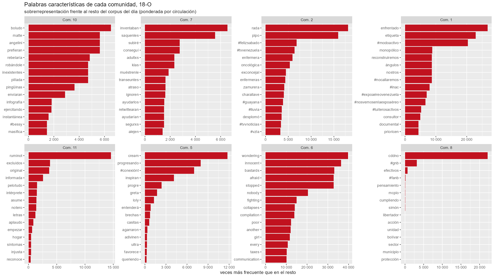

El 18 de octubre concentra 524.528 tweets, el 8,6% del corpus en 1 de 19 días. Con los retweets de ese día se construye una red dirigida: quien retuitea apunta a quien es retuiteado.
Warning in prettyNum(.Internal(format(x, trim, digits, nsmall, width, 3L, :
'big.mark' y 'decimal.mark' son ambos '.', lo cual puede ser confuso
Warning in prettyNum(.Internal(format(x, trim, digits, nsmall, width, 3L, :
'big.mark' y 'decimal.mark' son ambos '.', lo cual puede ser confuso
Warning in prettyNum(.Internal(format(x, trim, digits, nsmall, width, 3L, :
'big.mark' y 'decimal.mark' son ambos '.', lo cual puede ser confuso
Warning in prettyNum(.Internal(format(x, trim, digits, nsmall, width, 3L, :
'big.mark' y 'decimal.mark' son ambos '.', lo cual puede ser confuso
Warning in prettyNum(.Internal(format(x, trim, digits, nsmall, width, 3L, :
'big.mark' y 'decimal.mark' son ambos '.', lo cual puede ser confuso
Warning in prettyNum(.Internal(format(x, trim, digits, nsmall, width, 3L, :
'big.mark' y 'decimal.mark' son ambos '.', lo cual puede ser confuso
Tabla 1: Las ocho comunidades mayores del 18 de octubre.
Comunidad
Cuentas
% Chile
% Venezuela
RT recibidos
Latencia mediana (min)
Cuentas principales
10
19.722
55.0
0.2
151.581
95
vagoilustrado, lamocosaaa, PamJiles, Ro_SaavedraM, Chi
Las dos mayores son el núcleo político-ciudadano chileno y, en segundo lugar, el fandom K-pop. No es un error de clasificación: los handles y las biografías no dejan duda, y sus tweets ese día son reporte de represión, no contenido de fandom.
“tenían barricadas y los/as estudiantes la sacaron rápido para que la ambulancia pasara” — 3.003 retweets
“a este caballero se lo llevan por abrir las puertas de su casa para resguardar a transeúntes de las lacrimógenas” — 2.360 retweets
Y amplifican rápido: 37 minutos de mediana entre el tweet original y su retweet, contra 95 del núcleo político. Una infraestructura de coordinación ya montada, reconvertida en red de documentación.
Quién habla con quién

Cada fila suma 100%: a qué comunidades dirige sus retweets. Las chilenas conversan —la 11 manda 35% de sus RT a la 10, la 6 manda 26%, la 5 manda 22%— y la comunidad 10 es el sumidero común del día.
Tres comunidades, en cambio, están cerradas sobre sí mismas: 97%, 97% y 91% de sus retweets son internos. De eso trata la página siguiente.
Las cuentas más amplificadas

Vocabulario propio de cada comunidad

Medido por sobrerrepresentación frente al resto del día, no por frecuencia bruta: las palabras más frecuentes serían las mismas en todas las comunidades.